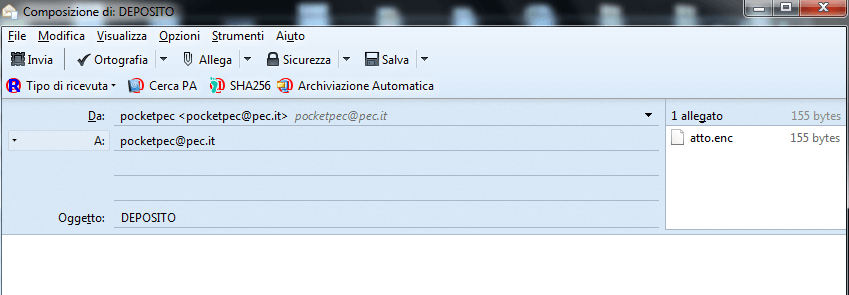
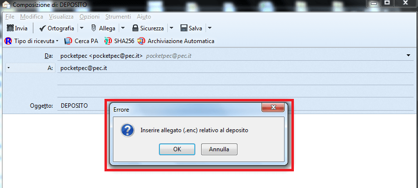

ThunderPEC ora intercetta le richieste di invio DEPOSITO provenienti da SLPCT (in generale, dall’esterno) ed effettua in automatico una serie di operazioni:
La figura mostra la finestra di composizione, relativa ad un DEPOSITO, in cui si può notare l’assenza della barra di formattazione del testo

Nel caso in cui sia assente l’allegato .enc, ThunderPEC lo segnala dando la possibilità di allegarlo
